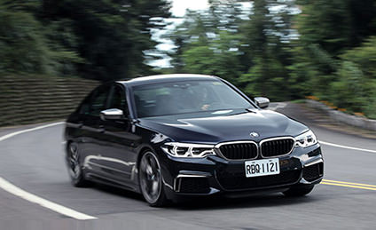

BMW向來就是駕駛樂趣的製造者，就像這次試駕的M550i xDrive，它不像M家族車款那樣隨時處在戰鬥狀態，卻又比一般的BMW擁有更多跑車性格，要快、要慢，完全操之在你，這就是「MPA」的迷人魅力！
舒適與性能兼得，是MPA性能車款的最大魅力
全名為M Performance Automobiles的MPA，是BMW鎖定對性能有特別要求、同時又對日常舒適格外講究的駕駛，所開發出的全新性能車系。目前BMW旗下的MPA車型，除了這次試駕的M550i xDrive之外，還有M140i、M240i、M760Li，以及休旅車系的X4 M40i、X5 M50及X6 M50d。簡單來說，只要在BMW貫有數字車型名稱前冠上M字樣，便是擁有M Performance加持的MPA性能車型，有著比一般款BMW更強的性能、更犀利的操控表現。
MPA的出現，讓BMW一個車系的組成由4大車型架構而來，定位由高至低依序為M Car (賽車化版本)、MPA (高階性能版本) 、M Sport (性能版本) 及一般車型。這樣的安排，可以發現除了一般車型之外，BMW對其它車型的規劃都圍繞在運動、性能及賽車化。
的確！BMW本身就是個好動的品牌，它造車的目的可不是只有移動這麼無聊，BMW更希望握著方向盤的人，能感受到駕駛樂趣 (Driving pleasure)，能隨著車輛的前進而有所悸動。
這股悸動，存在每一輛BMW之間，其中程度的高低，當然隨著車型版本的不同有所差異，M Sport比一般車型多些，M Performance又再比M Sport更強烈，M Car則是最硬派、 賽車化。這樣的區隔，讓不同喜好與需求的消費者，都能挑選到最適合自己的BMW，盡情享受開車的樂趣！
全車M款空力套件，搭配特殊Cerium Grey色塗裝
外觀上，BMW替M Performance車款打造了一套專屬造型，雖然不像M Car那樣張牙舞爪，但卻比一般車型更具性能霸氣。
以M550i xDrive為例，全車套上M款空力套件，包含造型更具侵略性的前後保桿、側裙及擾流尾翼，並在雙腎水箱罩、後視鏡外蓋、下氣壩左右飾件及前葉子板下飾件等處，採用特殊的Cerium Grey色塗裝，點綴出極具特色的視覺效果。此外，M550i xDrive還擁有20吋M款專屬輪圈、四出矩形排氣尾管、M車側銘牌，以及藍色塗裝的M款煞車卡鉗，營造出凜然的性能霸氣。

至於內裝部分，M550i xDrive並沒有刻意營造戰鬥氛圍，反倒是維持新世代大5 系列所擁有的高度科技感與豪華座艙。較為運動化的部分，包含具換檔撥片的M款多功能真皮方向盤、黑色車內頂篷、M款發光門檻，以及擁有藍色對比車縫線及M經典三色繡章的Dakota真皮雙前座跑車座椅。便利性方面較顯著的特色，則是標配功能強大的BMW ConnectedDrive智慧互聯駕駛，其中除了基本的智能緊急求助、遠距售後服務之外，還具備以下3項便利功能：
下載BMW Connected App至智慧型手機，並註冊帳號，將愛車與帳號串連之後，即可藉由智慧型手機遙控並監控車輛狀況，如車輛位置、車輛解鎖或上鎖等狀態，甚至開啟通風系統。
透過智慧型手機計畫及管理旅程，例如將手機的目的地直接傳送至車內導航系統，上車即可立即依循導航前往。同時手機的行事曆也會整合至BMW Connected APP，系統會依據抵達目的地時間與交通狀況計算何時啟程等，並藉由智慧型手機或Apple Watch通知車主出發時間。
透過安裝於車輛前後方及兩側車外後照鏡上的鏡頭拍攝車輛四周360度環境，透過網路將影像傳送至設定連線的智慧型手機中，讓車主無論何時皆可掌握車輛週遭狀況。
用新穎配備，打造高科技駕車環境
身為新世代大5系列當前的頂級車款，M550i xDrive搭載許多品牌旗艦大7系列的科技配備，讓M550i xDrive不僅是輛性能跑房車，更是款先進的科技座駕，其中最特別的包含：
M550i xDrive列為標配的進階LED主動式轉向頭燈，透過攝影鏡頭的輔助，照明燈型將隨前方狀況即時調整，能避免對前車或對方來車造成視線干擾，在維護自身與其他用路人安全的前提下，提供最遠、最廣泛的照明範圍。
採用12.3吋的全數位顯示幕來取代傳統指針式儀表，並會依Eco Pro、Comfort及Sport等駕駛模式的不同，切換顯示風格與資訊內容。
最新世代的iDrive 6.0系統一樣也搭載手勢控制功能，只需在排檔座稍上方的位置，做出特定手部動作，就能「隔空」控制音響音量、拒接來電或完成預設指令，不僅操作順手、自然，更能有效減少駕駛目光離開前方路況的時間。
除了發動引擎及打開門鎖的功能之外，智慧型鑰匙上的螢幕，更可顯示各種車輛狀態，還能觸控、滑動來檢視剩餘油量、可行駛里程、保養通知、時間，以及中控鎖、車窗及天窗的狀態，並可透過車上無線充電系統或USB進行充電。
重砲手！M550i xDrive的武力佈署
M550i xDrive的主要神髓，是車頭前方的4.4升V8 TwinPower Turbo雙渦輪增壓引擎，在M Performance的性能化調校下，這具引擎可在5,500轉時輸出462匹最大馬力，並且可在1,800轉的超低轉速域，完全輸出66.3公斤米的最大扭力，搭配上Steptronic運動化8速手自排變速箱，讓M550i xDrive只需4秒就能從靜止加速至時速100公里，加速性能甚至比F10世代的M5 (4.4秒)更強！
此外，M550i xDrive亦是同級豪華跑房車中的翹楚，動力規格與性能完全凌駕於Mercedes-Benz E43 4Matic及Audi S6之上，操控表現亦展現萬夫莫敵的架勢，其中xDrive智慧型可變四輪驅動系統、整合式主動轉向系統，以及輕量化車身與底盤便是其中關鍵所在，讓M550i xDrive即使擁有接近5米的長車身，但卻擁有極為敏捷的駕駛動態。
| M550i同級對手性能表較 | |||
| BMW M550i xDrive | M-Benz E43 4Matic | Audi S6 | |
| 引擎型式 | 4.4升V8雙渦輪 | 3.0升V6雙渦輪 | 4.0升V8雙渦輪 |
| 最大動力 | 462匹/66.3公斤米 | 401匹/53.1公斤米 | 450匹/56.1公斤米 |
| 變速箱 | 8速手自排 | 9速手自排 | 7速自手排 |
| 傳動方式 | 四驅 | 四驅 | 四驅 |
| 0~100km/h | 4秒 | 4.6秒 | 4.4秒 |
M550i xDrive的四輪驅動系統採用後驅取向設定，在一般狀態下，引擎動力將100%送往後輪，讓M550i xDrive保有BMW引以為傲的高度駕駛樂趣，而若輪胎發生打滑 (或有失控疑慮時)，xDrive系統便會將部分動力輸往前輪，並視情況即時調整四輪扭力分配，來提供更好的循跡效果與抓地力。
此外，M550i xDrive亦可選擇搭載整合式主動轉向系統，也就是俗稱的後輪轉向機構，這套系統以時速60公里/小時為分野，低速行車時前後軸將成反向轉向，來增進操控靈活度，而時速高於60公里/小時以上，前後軸將調整為平行轉向，讓高速巡弋時能保有更好的穩定性。
在Comfort模式下，乘坐感受相當舒適
發動M550i xDrive是種享受，按下引擎啟動鍵後，先會傳來特殊的啟動馬達聲響，接著爆出一股低沉、充滿霸氣的V8引擎吼音，4.4升V8雙渦輪增壓引擎就此甦醒，不過怠速時的M550i xDrive相當安靜，在任何模式下都是如此，顯露出MPA車款顧及日常實用性的設計理念。
M550i xDrive具有Adaptive、Comfort、Sport及Eco Pro等四種駕駛模式，隨著模式的不同，影響層面包含引擎反應、變速箱反應、轉向特質及懸吊阻尼等四大主軸。而其中Eco Pro著重省油性，Adaptive則是智慧駕駛模式，M550i xDrive會依照駕駛狀況不同，自動調整為當下最佳的行車模式。
將模式設定在Comfort模式徐徐前行，M550i xDrive的舒適性令人驚艷！搭配上豪華舒適的內裝，讓人完全忘記這是輛性能化車款。踩下油門，你依然感覺得到4.4升V8雙渦輪引擎懾人的動力，但輸出力道緩和，變速箱也柔順的進行檔位變化。
更令人欽佩的，是M款跑車化電子懸吊繫統在此狀態下，提供極為優異的阻尼設定，即便M550i xDrive配置的是前35、後30的超低扁平比20吋跑車胎，但卻擁有出色吸震能力，消弭了不平路面造成的彈跳，以及低扁平比輪胎造成的碎震，配上一首悠揚的樂章，不僅M550i xDrive，就連坐在車上的我們也都覺得優雅。
鋁合金輕量化車身，動態表現超輕盈
Sport模式是觸發M550i xDrive跑車性格的開關，頓時！眼前儀表切換為熱血的紅色背光，排氣管也同時爆出渾厚聲浪，一股強烈性能氛圍襲來，清楚說明M550i xDrive已進入戰鬥狀態。V8引擎的聲浪本來就迷人，而M Performance將其調校的更加狂放，並由車尾四出排氣尾管宣洩而出，收油時更會傳來一陣陣狂妄的爆裂響聲，不斷挑逗駕駛者的聽覺感官。
在Sport狀態下，M款跑車化電子懸吊繫統已達最運動的狀態，雖然阻尼比Comfort模式更加硬朗，但仍保有很不錯的舒適性，不會顛簸的讓人難受。比較明顯的差異，是油門、引擎及變速箱的反應更加快速，方向盤也調整的較為重手，讓駕駛得更專注於掌控車輛動態。
開著M550i xDrive在山路上飛馳，最神奇的是你不會感覺到它是一輛中大型豪華房車，車身動態非常輕盈，左右重心轉移也很快速。這分感受，是G30 5 Series在車體及底盤部件更廣泛使用鋁合金材質的成效，依車型不同最大瘦身幅度達到100公斤之多，輕量化的結果，不僅讓引擎動力更有效化作前進動能，對於操控表現同樣很有幫助。
Sport Plus模式衝擊感強烈！4秒加速破百的性能令人頭皮發麻
進一步切至Sport Plus狀態，此時引擎及變速箱的反應更快速、直接，無論升降檔，均會傳來強烈的震動衝擊，而全油門狀態下的M550i xDrive，即使是在上坡路段，強烈的加速力道依然令人頭皮發麻。進彎時，M款煞車系統提供充足的減速效果，準確、迅速的將車速降下來，且值得讚賞的是，即便經過輪番激烈操駕，卻沒有出現衰退跡象，經過M加持的煞車系統果然性能出眾。
462匹、66.3公斤米的動力輸出聽起來令人畏懼，但其實在Sport Plus狀態激烈駕駛，只要線性的掌控油門和轉向，出彎時M550i xDrive的後輪不會出現明顯蠢動，甚至就連DSC系統也鮮少介入，這代表M550i xDrive時時處在穩定的狀態，讓人能非常安全的享受M Performance的性能魅力，以及4.4升V8雙渦輪引擎所帶來的加速快感。
這其中的幕後功臣，便是xDrive智慧型可變四輪傳動系統，行駛過程中，xDrive系統不斷的在調整前後軸與左右輪的動力輸出比例，因此縱使M550i xDrive的車頭塞了具4.4升V8引擎，但轉向不足的程度卻很輕微；66.3公斤米的超強扭力在1,800轉就會湧出，但出彎時卻沒有後輪打滑的轉向過度疑慮。無論大小彎角，M550i xDrive的車輛動態始終表現優異，這對一輛中大型豪華房車來說實在不簡單！
無論紓壓或舒適，M550i xDrive都能滿足你的需求
M Performance在M550i xDrive投入了這麼多的科技，最終的受惠者，當然是手握方向盤的駕駛者！駕著M550i xDrive，你可以輕易驅策媲美M5的超強性能，同時聆聽迷人、熱血的排氣聲浪，在直線或蜿蜒道路上享受M550i xDrive提供的美好駕駛樂趣，用速度、用激情，把平日累積的煩惱、壓力甩在後頭。
而在這一趟任性的超高速旅行之後，只要將駕駛模式切至Comfort，M550i xDrive將和你一起冷靜下來，紓壓與舒適間的距離就僅在一指之間，這就是BMW MPA車款的奧妙所在。


-

舒適、又紓壓－BMW MPA性能車款 M550i xDrive試駕體驗
BMW向來就是駕駛樂趣的製造者，就像這次試駕的M550i xDrive，它不像M家族車款那樣隨時處在戰鬥狀態，卻又比一般的BMW擁有更多跑車性格，要快、要慢，完全操之在你，這就是「MPA」的迷人魅力！
-

性能與舒適的均衡點─BMW M Performance Automobiles高性能車款
BMW M Cars，是性能迷眼中不可多得的尤物，不過，少了一點日常代步的實用性。有鑑於此，BMW增加一條兼顧高性能與日常實用性的產品線，於是在2012年正式成立M Performance Automobiles，第一款車就是M135i。
-

BMW 640i Gran Coupé M Sport限量版上市
BMW臺灣總代理汎德汽車，選擇在2017年5月8日透過新聞稿方式宣布，搭載M Sport運動化套件的640i Gran Coupé...
-

3.4秒加速破百，新一代BMW M5高性能跑房車正式發表
BMW正式在2017年8月21日發表新一代M5，擁有霸氣十足的外觀，動力源自可輸出600匹最大馬力的4.4升V8雙渦輪引擎...
-

把手放開，你得到的是一切─BMW 530i M Sport試駕
「把手放開，你得到的是一切」這句話，出自電影《臥虎藏龍》。2016年適逢BMW的100歲大壽，隨著BMW一路演進至G世代...
-

輕功了得─BMW 530i M Sport試駕，動力操控篇
身為車壇龍頭大老的BMW，對於「練輕功」有著相當深入的刻劃，不僅僅是針對M Power性能部隊、抑或是MPA車型，乃至於一般車型在面臨世代更迭...

©2017 MediaBrilliance System Corporation. All Rights Reserved.